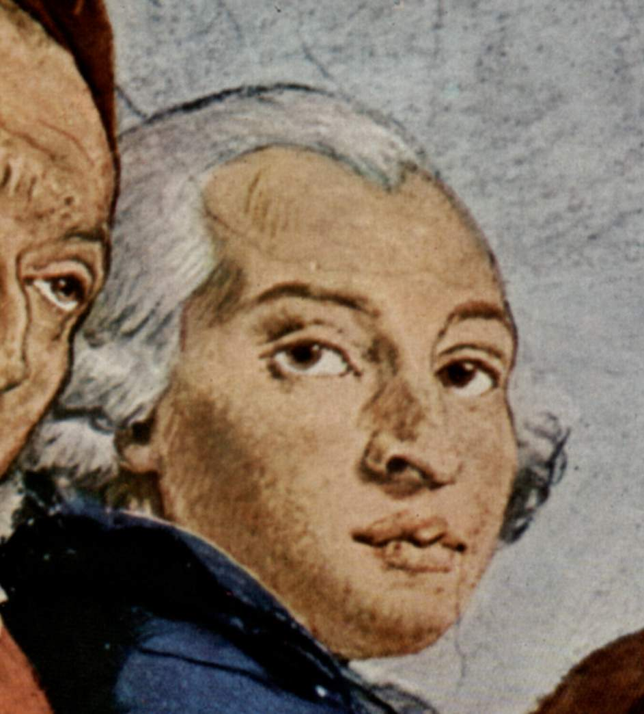

Pintor veneciano
Giandomenico Tiepolo
1727–1804
Hijo y principal colaborador de Giambattista, lo acompañó a Wurzburgo y a Madrid. Cuando quedó libre de la sombra paterna desarrolló una obra propia, más irónica y terrena, poblada de payasos y escenas de la Venecia que se acababa.